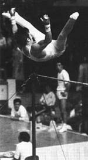

Bernd Jager (GDE)
1974 World Team Bronze Medalist
1976 Olympic Team Bronze Medalist

Medal Total
Olympic Games: 1 Bronze
European Championships: 1 Bronze
Jager was born on November 18, 1951. He trained at Vorwaerts Potsdam with coach Richard Karstedt, and was the inventor of the Jager salto on high bar. After retiring from competitive gymnastics, he became a coach at his gym. One of his students was Holger Behrendt. He also coached the Finnish men's national team in the late 1990s.
Competition Results
1971
GDR-BUL Dual Meet: 1st Team, 3rd AA
1972
GDR-USSR Dual Meet: 2nd Team, 12th AA
Vorwaerts Potsdam-CSKA Dual Meet:
4th AA
1973
GDR-SUI Dual Meet: 1st Team, 5th AA
University Games: 4th Team, 13th AA, 5th PH, 5th HB
1974
Canadian Milk Meet: 7th AA
Chunichi Cup: 7th AA
GDR-USSR Dual Meet: 6th AA
World Championships: 3rd Team, 21st AA, 5th PB, 5th HB
1975
GDR Championships: 1st AA, 1st PB, 1st HB, 4th R
1976
Olympic Games: 3rd Team, 10th AA
This page was created on June 19, 2011 and was last updated on March 31, 2019.
© Gymn Forum